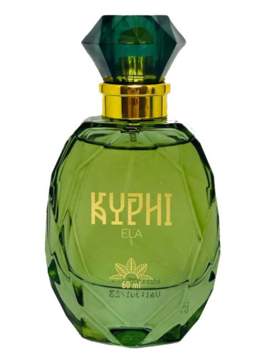

O Incrivel Dior Ambre Royale

O perfume mais caro do mundo é o "Shumukh," criado pela marca de luxo Nabeel Perfumes, com sede em Dubai. Este perfume foi apresentado em 2019 e é uma verdadeira obra de arte, tanto em sua fragrância quanto em seu design.
O "Shumukh" custa aproximadamente 1,29 milhões de dólares por frasco. O frasco é decorado com 3.571 diamantes, pérolas, ouro de 18 quilates e prata pura.
A fragrância é composta de ingredientes raros e exóticos, como almíscar natural, sândalo, âmbar, rosa da Turquia e madeira de agar indiana, conhecida como oud.
Além do perfume, a embalagem também é extremamente luxuosa. O frasco está montado em uma base de couro italiano e é acompanhado por uma caixa de exibição de 2 metros de altura. Esta caixa é incrustada com ouro, prata e diamantes, refletindo o compromisso com a exclusividade e o luxo.

O perfume mais antigo do mundo é considerado o Kyphi, uma fragrância usada no Egito Antigo. Kyphi era uma mistura complexa de ingredientes como mirra, incenso, canela, zimbro, vinho, mel e passas, entre outros. Ele era usado tanto como perfume quanto em rituais religiosos e medicinais, e era preparado com grande cuidado, seguindo receitas detalhadas preservadas em textos antigos.
Além disso, as escavações na ilha de Chipre revelaram perfumes ainda mais antigos, datando de cerca de 4.000 anos atrás. Esses perfumes foram encontrados em uma antiga fábrica de perfumes e incluem fragrâncias feitas de ervas e especiarias locais, como alecrim, lavanda e coentro. Esses achados mostram que a arte da perfumaria é uma prática antiga, com uma história rica que remonta a milhares de anos.